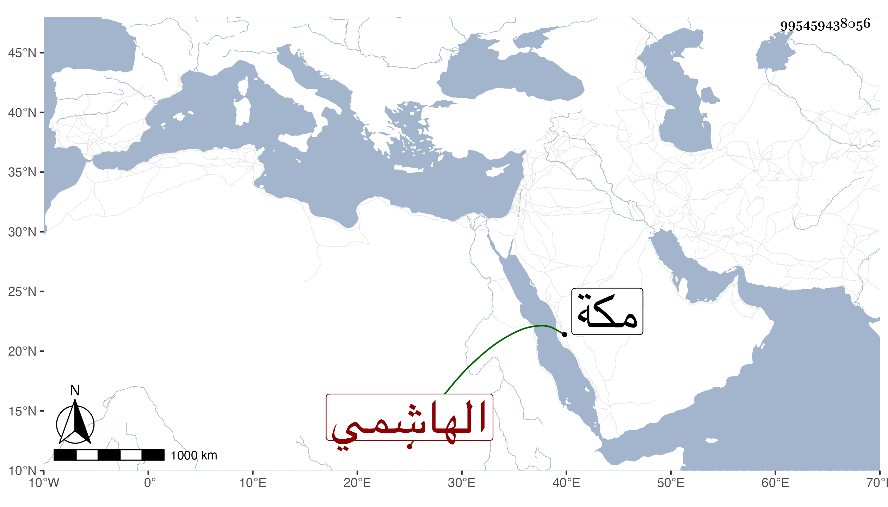

0902Sakhawi.DawLamic.ITO20230111-ara1.EIS1600.995459438056
Biography ID: 995459438056
60
بدور بضم الموحدة ابنة عبد الله أم أحمد المريسية بفتح الميم مستولدة الوجيه عبد الرحمن بن أبي الخير محمد بن فهد الهاشمي وأم خديجة ابنته ؛ أجاز لها في سنة ثمان وثمانمائة فما بعدها جماعة منهم عائشة ابنة ابن عبد الهادي والمجد اللغوي والزين المراغي والجمال بن ظهيرة بل سمعت على أبي الحسن بن سلامة جزء القزاز أجازت لنا وخلف سيدها بعد موته في سنة ثلاث وتسعين وسبعمائة عليها عتيق عمه العماد يحيى بن محمد بن فهد وهو الافتخار ياقوت بن عبد الله الحبشي فأولدها ومات عنها وتأيمت بعده ، وماتت فجأة في شوال سنة خمسين بمكة وهي جدة صاحبنا النجم بن فهد لأمه .
